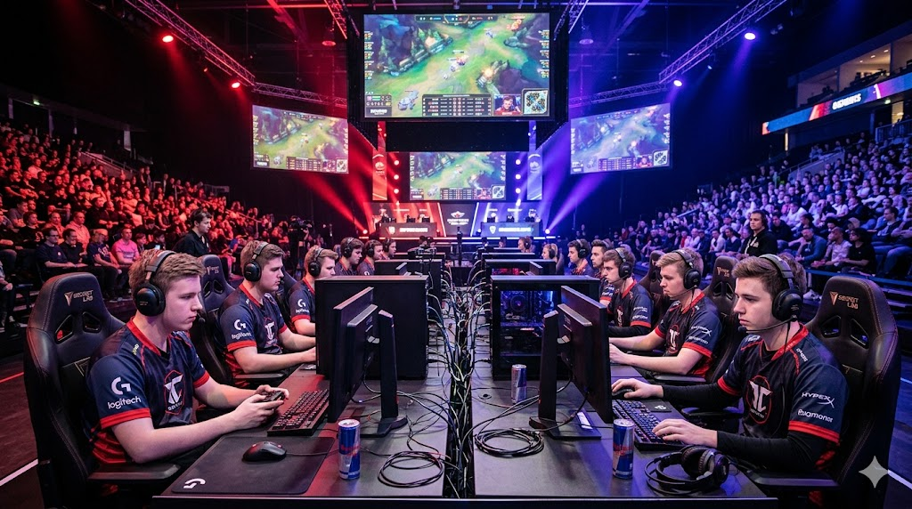
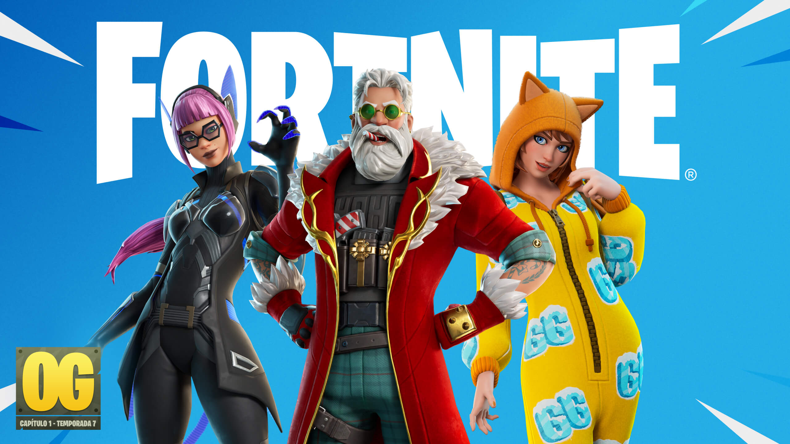
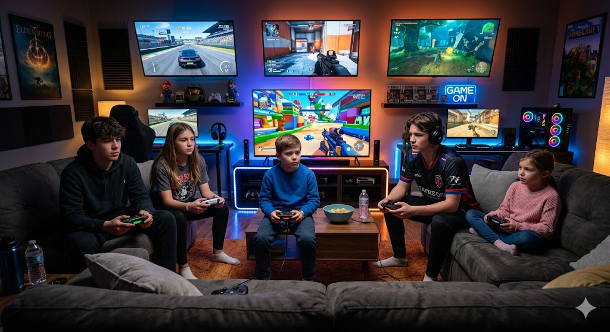

Noticias del Mundo Gamer
Crecimiento del gaming competitivo

En 2026, los esports han alcanzado un nuevo nivel. Juegos como Free Fire, Call of Duty y FIFA reúnen miles de jugadores en torneos con grandes premios. El gaming competitivo se ha convertido en una oportunidad profesional para muchos jóvenes alrededor del mundo.
Además, las plataformas de streaming han impulsado el crecimiento de los esports. Equipos profesionales y patrocinadores siguen aumentando, haciendo del gaming una industria en constante expansión.

Fortnite y sus nuevas actualizaciones

Fortnite continúa innovando con nuevos modos de juego, eventos en vivo y colaboraciones con grandes marcas. Su popularidad sigue creciendo gracias a su constante actualización de contenido.
La inclusión de nuevas mecánicas y recompensas mantiene a los jugadores activos, consolidándolo como uno de los juegos más influyentes del momento.

FIFA evoluciona a EA Sports FC

La famosa saga FIFA ha cambiado su nombre a EA Sports FC, marcando una nueva etapa en los videojuegos de fútbol. A pesar del cambio, mantiene su esencia competitiva y realista.
Con mejoras gráficas y jugabilidad renovada, el juego sigue siendo uno de los favoritos para los amantes del deporte.
.jpg)